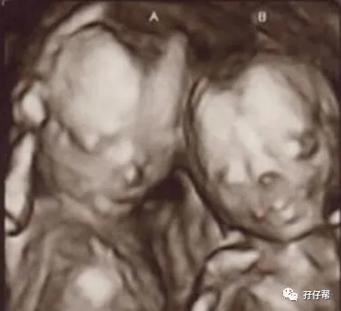
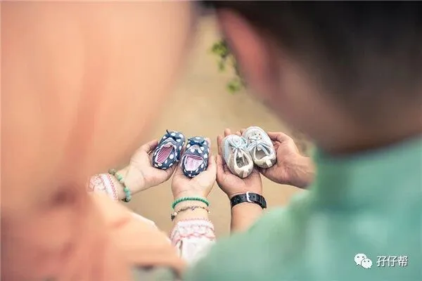
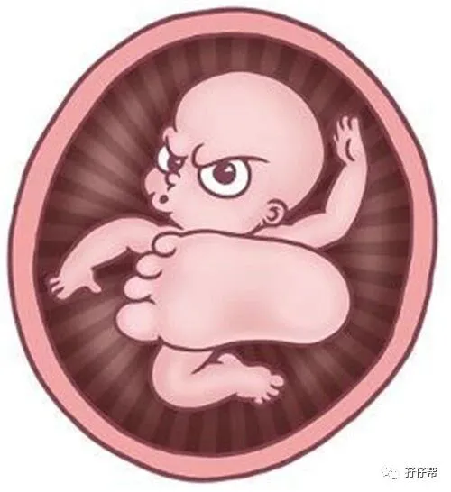

文|圆圈妈，一个文思如尿崩的双胎妈妈
图|来自网络，如有侵权，请联系删除
· 正 · 文 · 来 · 啦 ·
【01】两胎儿的发育情况
孕29周的胎宝宝有丝瓜那么长了，从头部到臀部长约38CM，约1274G▽：
孕29周的双胞胎胎儿发育图▽：
B超孕29周的双胞胎胎儿影像图▽：
【02】圆圈妈的孕期回忆录
Ⅰ 进入晚孕期，我开始休产假了！
终于两只脚踏入孕晚期，这代表着宝宝们安全出生的概率又多了一些。
自从确认怀上双胞胎那一刻开始，真的是一分一秒地盼着卸货的日子。
当时正热播《花千骨》，许久没有追剧的我，趁着休产假，终于可以好好放飞下自我了。
因为产检提示有宫缩，我不敢造次，严格遵医嘱，卧床保胎。
除了上厕所，吃饭，偶尔在客厅走动下，基本上大门不出二门不迈…
可能是躺多了，运动少了，才三五天的功夫，我就觉得整个腮帮子好像脱臼似的，合不拢，张不开，好酸痛的感觉...躺左边，右边脸疼，躺右边，左边脸疼！
我从图书馆借来了亦舒的言情小说，可是躺着看一会儿就觉得眼睛疼，可能是言情小说看多了，晚上居然做春梦了...额....晕！
肚子都这么大了还做春梦，这...好壮观啊！
Ⅱ 衣来伸手饭来张口等卸货
每天早晨不到6点钟，我就被胎动踢醒了，超神奇的胎动，比闹钟还准时。
吃完早餐才7点钟，上班的时候总觉得时间走得好快，一天好短暂，现在却觉得一天好漫长。
目送圆圈爸去上班，呆呆地坐在阳台上看楼下的大妈在抢新上市的新鲜玉米。
曾经为了科学备孕生个优质后代，我也是一大早就起来去跟一群大爷大婶抢水果蔬菜。
现在我肚子都长这样了，怕是没人敢跟我抢，肯定是躲我都嫌来不及。
坐了一会儿，我就觉得累了，眼睛犯困，继续回到床上睡回笼觉，这一睡就是中午11点。
接着休息一会，吃点水果，12点半吃中饭，2点左右我又开始睡，一直睡到下午 4点钟。
午睡醒后喝一大杯水，吃点零食，看会儿电视，然后就6点半了。
等圆圈爸下班回来吃完晚饭就8点钟了。
感慨这双胎肚子的增长速度特别快，就在10天前我还能和圆圈爸饭后外出散步，现在下楼梯都困难了，只能躺在阳台躺椅上欣赏胎动。
此时，圆圈爸会陪我做一些很无聊的事情，比如数对面新开的传奇冒菜今晚来了多少人，猜猜两胎儿的性别，拿出四维B超单上的照片琢磨下看像谁多一点...
特别是讨论下双胞胎如何取名字。
那时，我想到很多双胞胎小名，左左右右，糖糖果果，甜甜蜜蜜...因为不知道男女，大多都是比较中性的名字。
聊不了多久，我又想睡了，这一天就这样过去了：四点一线，床+饭桌+马桶。
虽然日子枯燥单调，好在我状态挺好的，能吃能喝，除了睡觉折腾了点，但总比躺医院里舒服！
☞☞TIPS☜☜： 双胞胎孕期群里，只要有人提到双胞胎如何取名字就炸锅似的，跳出很多准妈妈热烈讨论，大家都被那些奇形怪状，脑洞大开的名双胞胎宝宝名字逗笑了。
给双胞胎取名字真是无聊孕期的一道润滑剂，与队友一起脑洞大开想一些搞笑的姓名和小名特别有意思。
个人建议，给双胞胎取小名不必太纠结，取什么名字真无定论可言，只要自己叫着顺口，听着舒服，看着开心就行了。
取大名的时候，注意避免太多重名，那些烂大街的名字就不要再考虑了。
男孩名字用楚辞，女孩名字用诗经，这个套路也最好别采纳了。
如果对生辰八字，缺金少木等有特殊要求的，那就另当别论了。
Ⅲ 胎动很热闹，像好莱坞大片
29周的胎动精彩极了，堪称好莱坞动作大片，特别是晚饭过后，他们就特别“嗨”。
可能是空间太挤不能同时运动，只能按顺序轮流，他们好像说好似的，又好像暗自较劲，看谁翻身翻得漂亮。
左上腹那个被医生叫做F1的宝宝开始翻身过去，然后满肚子打滚，接着小试拳脚，来个乾坤大挪移...
右下腹那个被医生叫做F2的宝宝也不甘示弱，往反方向翻身，小手小脚一直不停的踢腾，接着来个降龙十巴掌…看招!
每次准备胎动的时候，我就招呼圆圈爸过来围观，然后两人看着翻滚的肚皮，傻笑…
Ⅳ 突发异常，上腹部剧痛
29周+3天，刚吃完早晨，我只觉得上腹部一阵疼痛感袭来，起初以为是要上大号，可是从厕所出来后，这种疼痛感依旧没有缓解，而且愈演愈烈。
疼得我开始额头冒冷汗…想呕吐…
苍天啊，我不是要生了吧！
虽然我确实很想卸货，可是这时候生下来，大人孩子得多遭罪啊。
这个可怕的心理暗示让我疼得更厉害了！
圆圈爸也被吓坏了，哆嗦着要打电话叫救护车了，婆婆在一旁仔细询问了我的症状和早餐吃了什么。
平时最紧张的她反而很淡定了，她倒来一盆温水，让我侧躺下，用温热毛巾敷在我的疼痛部位…
过了一会儿，疼痛真的缓解了不少。
原来是我一大早就喝了一杯冰的鲜牛奶，刺激到肠胃，引起胃痉挛了，还好有惊无险。
非常感激婆婆的临危不乱。
家有一老胜过一宝,说得极是。老人家的经验有时候还是值得我们这些小辈借鉴和采纳的。
Ⅴ 我的胃变小了
即便是到了孕后期，我的胃口依然很好，可是吃不了多少就觉得顶心顶肺了。
我的“胃大叔”已经爱莫能助了。
不断增大的子宫开始压迫我的肠胃器官，五脏六腑都被挤变形了。
有时候不小心贪吃多了几口，就会感觉食物进不去，被卡在喉咙里，也许下一秒打嗝就会冒出来似的。
为了满足两胎儿的营养，也为了减少胃灼热带来的不适感，我只能少吃多餐。
每天差不多要吃6顿，早餐分两顿吃完，有时候午餐分了三次吃，平均每两小时就得吃点东西，只有晚餐是固定地跟家人一桌吃饭的，临睡前会坚持喝牛奶，若还觉得不够，会吃点粗粮，填下肚子。
☞☞TIPS☜☜：到了孕晚期，由于子宫膨大，压迫了胃，使胃的容量变小，容易有饱腹感。
吃饭之前把裤头松开下，可以减少胃食管逆流，吃饭的时候别吃太快，吃完后斜躺着或者半坐卧，感觉食物都进去了再活动下。
你可能会很鄙视这些小细节，吃个饭还那么鸡巴，但作为一名晚孕期的双胎妈妈，能这么做已经很不错了！（此处省略一万字的哭…）
最后再强调下，这也是为什么我经常提醒孕中期的准妈妈趁着有食欲要赶紧多吃点，因为到了孕后期，想多吃都挤不进去了。
☞未完待续☜
上期推文:
连载（一）|圆圈妈双胞胎怀孕过程第4周
连载（二）|圆圈妈双胞胎怀孕过程第5周
连载（三）|圆圈妈双胞胎怀孕过程第6周
连载（四）|圆圈妈双胞胎怀孕过程第7周
连载（五）|圆圈妈双胞胎怀孕过程第8周
连载（六）|圆圈妈双胞胎怀孕过程第9周
连载（七）|圆圈妈双胞胎怀孕过程第10周
连载（八）|圆圈妈双胞胎怀孕过程第11周
连载（九）|圆圈妈双胞胎怀孕过程第12周
连载（十）|圆圈妈双胞胎怀孕过程第13周
连载（十一）|圆圈妈双胞胎怀孕过程第14周
连载（十二）|圆圈妈双胞胎怀孕过程第15周
连载（十三）|圆圈妈双胞胎怀孕过程第16周
连载（十四）|圆圈妈双胞胎怀孕过程第17周
连载（十五）|圆圈妈双胞胎怀孕过程第18周
连载（十六）|圆圈妈双胞胎怀孕过程第19周
连载（十七）|圆圈妈双胞胎怀孕过程第20周
连载（十八）|圆圈妈双胞胎怀孕过程第21周
连载（十九）|圆圈妈双胞胎怀孕过程第22周
连载（二十）|圆圈妈双胞胎怀孕过程第23周
连载（二十一）|圆圈妈双胞胎怀孕过程第24周
连载（二十二）|圆圈妈双胞胎怀孕过程第25周
连载（二十三）|圆圈妈双胞胎怀孕过程第26周
连载（二十四）|圆圈妈双胞胎怀孕过程第27周
连载（二十五）|圆圈妈双胞胎怀孕过程第28周
下期预告：
连载（二十七）|圆圈妈双胞胎怀孕过程第30周
-END-
重磅互动
#你希望写什么育儿经验干货？#
评论区聊一聊
随便提，万一下篇就写了呢？
关于这个号
谢谢关注！
我是圆圈妈
85后，全职妈妈
家有孖仔两枚，圆圈&圈圈
双胞胎育儿公众号：孖仔帮
ID:twinsbang
旨意分享双胞胎育儿经验帮助双胞胎家庭
有经验可循
有组织可靠
希望我的经验对您有所启发
期待与您一起共享双胞胎育儿经


